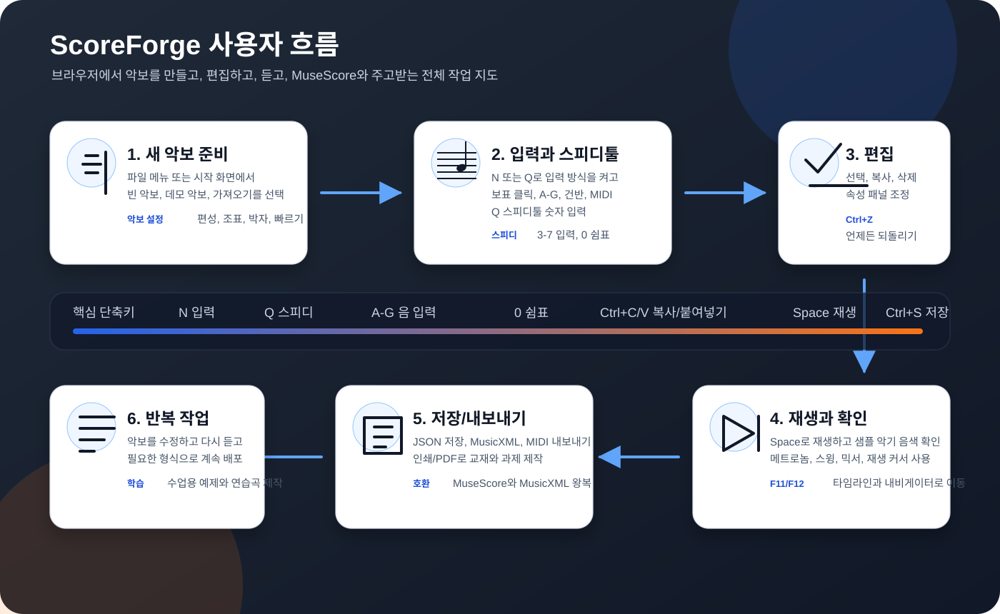

ScoreForge
한글 사용자 설명서
브라우저에서 악보를 만들고, 편집하고, 재생하고, MuseScore와 주고받기 위한 단계별 매뉴얼입니다.

0. 한눈에 보는 작업 흐름
ScoreForge는 설치 없이 브라우저에서 악보를 입력하고, 소리로 확인하고, 파일로 내보내는 정적 웹앱입니다. 기본 흐름은 새 악보 준비, 입력, 편집, 재생 확인, 내보내기입니다.

1. 화면 구조 이해
화면은 크게 상단 툴바, 입력 팔레트, 중앙 악보, 오른쪽 속성 패널, 하단 건반과 상태바로 나뉩니다.
처음 켰을 때 확인할 것
- 상단의 템포 입력칸이 원하는 BPM인지 확인합니다.
- 입력할 보표가 맞는지 보표 선택 드롭다운을 확인합니다.
- 악보가 작거나 크면 하단의 확대/축소 버튼 또는 Ctrl+마우스 휠을 사용합니다.
2. 10분 빠른 시작
아래 절차를 그대로 따라 하면 4마디짜리 간단한 악보를 만들고 재생, 저장까지 할 수 있습니다.
파일 메뉴에서 새 악보를 선택하거나 시작 화면의 예제 악보를 사용합니다.
악보 설정 버튼에서 제목, 작곡가, 편성, 조표, 박자, 빠르기를 정합니다.
N 또는 입력 모드 버튼을 누릅니다. 마우스 커서가 보표 입력 상태로 바뀝니다.
5는 4분음표, 4는 8분음표, 3은 16분음표입니다. 점음표는 .입니다.
보표를 클릭하거나 A-G를 눌러 음을 입력합니다. 쉼표는 0입니다.
Space를 누르면 현재 선택 위치부터 재생됩니다. 처음부터 들으려면 되감기 버튼을 누릅니다.
Ctrl+S로 JSON 파일을 저장하거나 파일 메뉴에서 MusicXML/MIDI를 내보냅니다.

입력 모드에서는 한 손은 숫자 음길이, 다른 손은 A-G 음이름을 맡기면 MuseScore식으로 빠르게 입력할 수 있습니다.
3. 음표와 쉼표 입력
ScoreForge는 보표 클릭, 키보드, 화면 피아노, MIDI, 드럼 패드 입력을 지원합니다. 사용자의 작업 습관에 맞춰 골라 쓰면 됩니다.
3-1. 마우스로 입력
- N으로 입력 모드를 켭니다.
- 음길이를 선택합니다.
- 보표 위 원하는 높이에 마우스를 올려 고스트 음표를 확인합니다.
- 클릭하면 음표가 들어가고 커서가 다음 위치로 이동합니다.
3-2. 키보드로 입력
| 동작 | 방법 | 팁 |
|---|---|---|
| 음 입력 | A-G | 마지막 입력 음 근처의 옥타브로 자동 추론합니다. |
| 쉼표 입력 | 0 | 현재 커서 위치에 선택한 길이의 쉼표를 넣습니다. |
| 화음 쌓기 | Shift+A-G | 직전 음표에 음을 추가합니다. |
| 점음표 | . | 현재 음길이에 부점을 켜거나 끕니다. |
| 잇단음표 | Ctrl+3-9 | 선택한 음표 또는 쉼표를 n잇단으로 나눕니다. |
3-3. 성부와 다중 보표
피아노처럼 한 보표 안에 여러 리듬이 겹칠 때는 V1-V4 성부를 사용합니다. 관례상 V1/V3은 스템이 위로, V2/V4는 아래로 표시됩니다.
3-4. 드럼과 TAB 입력
악보 설정에서 드럼 키트 또는 기타 + TAB 편성을 선택하면 입력 방식이 해당 악기에 맞게 바뀝니다. 드럼 보표에서는 하단 드럼 패드가 나타나고, 기타+TAB에서는 표준 보표와 TAB가 연결됩니다.
4. 선택과 편집
ScoreForge의 편집은 선택, 변경, 확인의 반복입니다. 모든 주요 변경은 실행 취소/다시 실행으로 되돌릴 수 있습니다.
4-1. 선택
- 음표나 쉼표를 클릭하면 단일 선택됩니다.
- Shift+클릭 또는 Shift+←/→로 범위를 선택합니다.
- 선택된 음표는 파란색으로 표시됩니다.
4-2. 기본 편집
- Delete: 선택한 음표를 같은 길이의 쉼표로 바꿉니다.
- ↑/↓: 반음씩 이동합니다. Ctrl을 함께 누르면 옥타브 이동입니다.
- 마우스로 음표를 위아래로 드래그하면 음높이를 바꿉니다.
4-3. 복사/붙여넣기
- 범위를 선택합니다.
- Ctrl+C로 복사합니다.
- 붙여넣을 위치를 선택합니다.
- Ctrl+V로 붙여넣습니다.
현재 구현은 한 보표 안의 범위를 기준으로 붙여넣습니다. 여러 파트 사이의 복사는 먼저 대상 보표를 선택한 뒤 붙여넣으세요.
5. 기호와 텍스트
표현 기호는 악보의 연주 의도를 전달합니다. ScoreForge는 기본 셈여림, 아티큘레이션, 이음줄, 헤어핀, 템포, 리허설 마크, 스태프 텍스트, 코드 기호, 프렛보드를 지원합니다.
| 분류 | 넣는 방법 | 설명 |
|---|---|---|
| 타이 | T 또는 타이 버튼 | 같은 음높이를 다음 음표와 붙입니다. |
| 이음줄 | S | 범위 선택 후 누르면 양 끝 음표 사이에 슬러를 표시합니다. |
| 셈여림 | pp, p, mp, mf, f, ff 버튼 | 선택 위치에 다이내믹을 붙이고 재생 세기에 반영합니다. |
| 헤어핀 | <, > | 범위 선택 후 크레셴도/디미누엔도를 표시합니다. |
| 아티큘레이션 | Shift+S/N/V/O | 스타카토, 테누토, 악센트, 마르카토를 넣습니다. |
| 템포 | Shift+T | 선택 위치에 템포 표시를 넣고 재생 템포맵에 반영합니다. |
| 리허설 | R | A, B, C 같은 리허설 마크를 표시합니다. |
| 스태프 텍스트 | Shift+L | pizz., arco, mute 같은 연주 지시를 입력합니다. |
코드 기호와 프렛보드
C7 버튼 또는 명령 팔레트에서 코드 기호를 넣습니다. C, Am, G7처럼 일반적인 기타 코드에는 프렛보드 다이어그램이 자동으로 붙습니다.
6. 재생과 믹서
재생 기능은 입력한 악보를 실제 소리로 확인하는 단계입니다. smplr 기반 실제 악기 샘플을 우선 사용하고, 실패하면 내장 신스로 폴백합니다.

재생 기본
- Space: 재생/일시정지
- Esc: 정지
- 선택한 음표가 있으면 그 위치부터 재생됩니다.
- 재생 중에는 주황색 커서와 음표 하이라이트가 현재 위치를 보여줍니다.
소리 설정
- 악기 드롭다운: 피아노, 일렉피아노, 오르간, 현악기, 플루트, 기타, 드럼 등
- 메트로놈: 박자 기준 클릭음을 켭니다.
- 스윙: 8분음표 계열을 약/중/강 스윙으로 재생합니다.
상단의 샘플 상태 배지가 대기, 로딩, 준비, 폴백 상태를 보여줍니다. 네트워크가 느리면 첫 재생 때 조금 기다릴 수 있습니다.
7. 악보 설정과 조판
악보 설정은 음악 내용과 페이지 모양을 함께 다룹니다. 새 악보를 시작할 때뿐 아니라 작업 중에도 바꿀 수 있습니다.
7-1. 편성 선택
| 편성 | 사용 상황 | 특징 |
|---|---|---|
| 독주 1단 | 멜로디, 리드 시트, 간단한 연습곡 | 가장 빠르게 시작할 수 있습니다. |
| 피아노 2단 | 오른손/왼손 분리 | 높은음자리표와 낮은음자리표를 함께 표시합니다. |
| 플루트+피아노 | 반주가 있는 독주곡 | 다중 악기와 다중 보표를 테스트하기 좋습니다. |
| 현악4중주 | 파트별 재생과 총보 작업 | 여러 파트의 음색과 보표 이름을 표시합니다. |
| 드럼 키트 | 리듬 패턴 | 드럼 패드와 X 음표머리를 사용합니다. |
| 기타+TAB | 기타 악보 | 표준 보표와 TAB를 연결합니다. |
7-2. 브레이크 사용
입력 팔레트의 ↵, Pg, Sec 버튼으로 선택한 마디 뒤에 시스템 줄바꿈, 페이지 나눔, 섹션 브레이크를 넣습니다. MusicXML 내보내기에도 기본 페이지/시스템 나눔 정보가 반영됩니다.
8. 속성 패널
속성 패널은 선택한 요소를 빠르게 세부 조정하는 곳입니다. MuseScore의 Properties 패널처럼, 선택 상태에 따라 표시되는 항목이 달라집니다.

9. 내비게이터와 타임라인
악보가 길어질수록 이동 도구가 중요합니다. 내비게이터는 악보의 축소 지도이고, 타임라인은 마디별 음표 밀도와 마커를 보여주는 이동 패널입니다.


이동 방법
- F12: 내비게이터 열기
- F11: 타임라인 열기
- Ctrl+F 또는 Ctrl+G: 마디 번호나 리허설 마크로 이동
- 리허설 마크 A로 이동하려면
r:A를 입력합니다.
10. 파일 저장, 가져오기, 내보내기
ScoreForge는 자체 JSON 저장, MusicXML 왕복, MIDI 내보내기, 인쇄/PDF 저장을 지원합니다. 브라우저 자동 저장도 함께 동작합니다.
| 작업 | 메뉴 | 용도 |
|---|---|---|
| JSON 저장 | 파일 - 저장 또는 Ctrl+S | ScoreForge에서 나중에 다시 열 원본 파일 |
| JSON 열기 | 파일 - 열기 | 이전에 저장한 ScoreForge 악보 열기 |
| MusicXML 내보내기 | 파일 - MusicXML 내보내기 | MuseScore 등 다른 악보 프로그램과 호환 |
| MusicXML/.mxl 가져오기 | 파일 - 열기 또는 드래그&드롭 | 외부 악보를 ScoreForge로 가져오기 |
| MIDI 내보내기 | 파일 - MIDI 내보내기 | DAW, 시퀀서, 반주 제작에 활용 |
| PDF 저장 | 파일 - 인쇄/PDF 저장 | 과제, 수업자료, 배포용 악보 |
MusicXML에 ScoreForge가 아직 지원하지 않는 표기가 있으면 가져오기 결과 다이얼로그에 요약됩니다. 이 목록을 보고 필요한 부분을 수동으로 보정하세요.
11. 단축키 표
자주 쓰는 기능은 단축키로 익히면 훨씬 빨라집니다.

| 키 | 동작 | 사용 팁 |
|---|---|---|
| N | 입력 모드 켜기/끄기 | 입력과 선택 모드를 빠르게 오갑니다. |
| 3-7 | 음길이 선택 | 3=16분, 4=8분, 5=4분, 6=2분, 7=온음표 |
| A-G | 음 입력 또는 선택 음 재지정 | 입력 모드 여부에 따라 동작이 다릅니다. |
| 0 | 쉼표 | 입력 모드에서는 쉼표 입력, 선택 모드에서는 삭제와 비슷하게 씁니다. |
| . | 점음표 | 현재 길이에 부점을 붙입니다. |
| T | 타이 | 같은 음높이의 다음 음과 붙입니다. |
| S | 이음줄 | 범위 선택 후 사용하면 좋습니다. |
| Ctrl+3-9 | 잇단음표 | 선택한 음표/쉼표를 n개로 나눕니다. |
| Ctrl+C/V/X | 복사/붙여넣기/잘라내기 | 범위 선택과 함께 쓰세요. |
| Space | 재생/일시정지 | 선택한 위치부터 재생합니다. |
| Ctrl+S | 저장 | JSON 파일을 내려받습니다. |
| F11/F12 | 타임라인/내비게이터 | 긴 악보에서 이동 속도를 높입니다. |
| Ctrl+K | 명령 팔레트 | 기능 이름으로 검색해 실행합니다. |

12. 문제 해결
아래 항목은 실제 사용 중 가장 자주 만나는 상황과 해결 방법입니다.
| 문제 | 원인 | 해결 |
|---|---|---|
| 음표가 입력되지 않음 | 입력 모드가 꺼져 있거나 다른 보표가 선택됨 | N을 눌러 입력 모드를 켜고 보표 선택 드롭다운을 확인합니다. |
| 원하는 옥타브가 아님 | 키보드 입력은 마지막 음 근처로 옥타브를 추론함 | 입력 후 Ctrl+↑/↓로 옥타브를 조정합니다. |
| 소리가 안 남 | 브라우저 오디오 권한 또는 샘플 로딩 지연 | 한 번 화면을 클릭한 뒤 다시 재생하고, 샘플 상태 배지를 확인합니다. |
| MusicXML 가져오기 후 일부 기호가 없음 | 지원 범위를 벗어난 표기 | 가져오기 리포트를 확인하고 속성 패널/팔레트로 보정합니다. |
| 악보가 너무 빽빽함 | 마디/줄 또는 음표 간격이 좁음 | 악보 설정에서 마디/줄을 줄이거나 음표 간격을 키웁니다. |
| 패널이 좁음 | 브라우저 폭이 작음 | 확대 비율을 낮추거나 속성 버튼으로 패널을 접습니다. |
작업 전 체크리스트
- 제목, 작곡가, 편성, 박자, 조표를 먼저 정했습니다.
- 입력할 보표와 성부가 맞습니다.
- 중요한 작업 전에는 Ctrl+S로 JSON을 저장했습니다.
- 외부 프로그램으로 넘길 때는 MusicXML과 PDF를 함께 내보냈습니다.